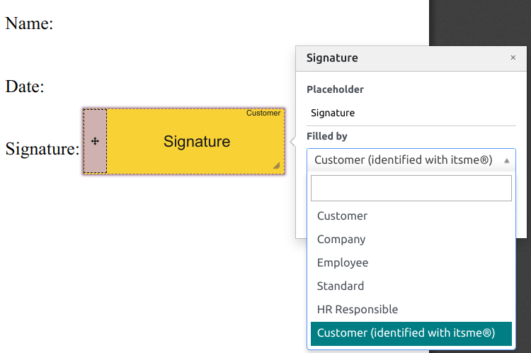

Firma electrónica¶
La aplicación Firma electrónica de Odoo le permite enviar, firmar y aprobar documentos en línea.
Una firma electrónica muestra que la persona está de acuerdo con el contenido de un documento. Justo como la firma manuscrita, la firma electrónica representa un acuerdo legal según los términos del documento firmado.
Con la firma, puede subir cualquier documento en PDF y agregarle campos. Estos se pueden llenar automáticamente con los detalles del usuario existentes en su base de datos.
Validez de firmas electrónicas¶
Los documentos firmados a través de la aplicación Firma son firmas electrónicas válidas en la Unión Europea y en Estados Unidos. También cumplen con los requerimentos de firmas electrónicas en la mayoría de países. La validez legal de las firmas que genera Odoo dependen de la legislación de su país. Las empresas que operan en el extranjero también deben considerar las legislaciones acerca de las firmas electrónicas.
Unión Europea¶
El Sistema europeo de reconocimiento de identidades electrónicas (eIDAS, por sus siglas en inglés) establece el marco para las firmas electrónicas dentro de los 27 estados miembros de la Unión Europea. Reconoce tres tipos de firmas electrónicas:
Firmas electrónicas simples
Firmas electrónicas avanzadas
Firmas electrónicas calificadas
Odoo genera el primer tipo, firmas electrónicas simples, estas firmas son legalmente válidas en E.U.A, como lo establecen las normas del eIDAS.
Es posible que las firmas electrónicas no se reconozcan como válidas automáticamente. Puede que necesite aportar evidencia que compruebe la validez de la firma. Si bien la aplicación Firma ofrece una firma electrónica simple, se recopila evidencia de manera automática durante el proceso de firma, como:
Validación por correo electrónico y SMS (si está activada)
Prueba fidedigna de identidad a través de itsme® (disponible en Bélgica y los Países Bajos)
Registros de accceso con marcas de tiempo, IP y trazabilidad geográfica y sus firmas asociadas.
Trazabilidad e inalterabilidad de documentos (Odoo detecta cualquier alteración hecha a los documentos usando pruebas criptográficas)
Estados Unidos¶
La Ley ESIGN (Ley de Firmas Electróncicas para el Comercio Mundial y Nacional), a nivel interestatal e internacional, y la UETA (Ley Uniforme de Transacciones Electrónicas), a nivel estatal, proporcionan el marco legal para las firmas electrónicas. Tenga en cuenta que Illinois y Nueva York no han implementado la UETA, pero cuentan con leyes similares.
En general, para ser reconocidas como válidas, las firmas electrónicas deben cumplir cinco criterios:
El signatario debe demostrar una clara intención de firmar. Por ejemplo, usar un mouse para hacer la firma demuestra intención. El signatario también debe tener la opción de no firmar el documento electrónico.
El signatario primero debe expresar consentimiento para realizar transacciones electrónicas.
La firma debe estar claramente atribuida. En Odoo, los metadatos, como la dirección IP del signatario se agrega a cada firma, lo que puede usarse como evidencia probatoria.
La firma debe estar asocidada con el documento firmado, por ejemplo, al tener registro de cómo se capturo la firma.
Los documentos firmados de manera electrónica deben ser conservados y almacenados por todas las partes involucradas, al proveer al signatario ya sea una copia completa o la posibilidad de descargar una copia.
Importante
La información anterior no tiene valor legal, solo se facilita para proporcionar información general. Dado que las leyes que rigen las firmas electrónicas evolucionan rápidamente, no podemos garantizar que toda la información esté actualizada. Le recomendamos que se ponga en contacto con un abogado que le pueda proporcionar asesoramiento legal sobre el cumplimiento y validez de las firmas electrónicas.
Enviar un documento para firmar¶
Firma única¶
Puede hacer clic en Subir un PDF para firmar desde su tablero para realizar una firma única. Seleccione su documento, ábralo y arrastre y suelte los campos necesarios en su documento. Puede modificar la función asignada a un campo, solo tiene que hacer clic en ella y seleccionar la que quiera.
Cuando esté listo, haga clic en Enviar y llene los campos solicitados. Su documento seguirá disponible una vez que lo haya enviado. Vaya a para ver su documento y el estado de las firmas.

Plantillas¶
Puede crear plantillas de documentos cuando tenga que enviar el mismo documento más de una vez. Desde su tablero, haga clic en Subir plantilla PDF. Seleccione el documento y agregue los campos. Para modificar la función de un campo solo tiene que hacer clic en él y seleccionar la función que quiera.
Haga clic en Propiedades de la plantilla para agregar Etiquetas a su plantilla, defina un Espacio de trabajo de documentos firmados, agregue Etiquetas de documentos firmados, configure un Enlace de redireccionamiento que estará disponible en el mensaje de confirmación de la firma recibido después de que se firme el documento, o defina Usuarios autorizados si quiere restringir el uso de su plantilla a usuarios o grupos autorizados.
Sus plantillas son visibles desde el tablero de forma predeterminada. Puede hacer clic en Enviar para enviar una plantilla de documento de forma rápida a un signatario o Firmar ahora si está listo para firmar el documento de inmediato.
Truco
Puede crear una plantilla desde un documento enviado previamente desde . En el documento que quiera recuperar haga cic en ⋮ y después en Plantilla. Haga clic en ⋮ otra vez y luego en Restaurar. Ahora, su documento aparecerá en su tablero a un lado del resto de sus plantillas.
Roles¶
Cada campo en un documento de Firma electrónica esta relacionado con un rol que corresponde a una persona específica. Cuando un documento se firma, la persona asignada a ese rol necesita llenar los campos asignados y firmarlos.
Puede ver los roles en .
Es posible actualizar roles existentes o crear nuevos al hacer clic en Nuevo. Elija un Nombre de rol, agregue un Paso adicional de autenticación para confirmar la identidad del signatario, y si el documento se puede reasignar a otro contacto, seleccione Cambio autorizado para el rol. También puede escoger un Color para el rol. Este color le puede ayudar a saber qué roles son responsables de qué campos al configurar una plantilla.
Identificación asegurada¶
Como propietario del documento, puede solicitar un Paso adicional de autenticación a través de una verificación de SMS o a través de Itsme® (disponible en Bélgica y Países Bajos). Ambas opciones de autenticación requieren créditos. Si no tiene créditos disponibles, los pasos de autenticación se omitirán.
Verificación por SMS¶
Vaya a . Haga clic en la columna Paso de autenticación adicional para el rol, y seleccione Código único via SMS.
Nota
Para poder enviar mensajes SMS debe registrar su número de teléfono. Para hacerlo, vaya a y haga clic en Comprar créditos en Autenticar por SMS.
Vaya al documento por firmar, agregue el campo para el que se requiere la verficación SMS, por ejemplo el campo Firma y haga clic en Enviar. En la página, seleccione el cliente y haga clic en Enviar.
El signatario del documento llena el campo Firma, firma el documento y luego hace clic en Validar y enviar documento completo. Aparecerá una página de Validación final donde puede agregar su número de teléfono. Los códigos de un solo uso se envían por SMS.

Nota
Esta función está activada de manera predeterminada.
Tan pronto como el paso de autenticación adicional aplique a un rol, se solicitará este paso de validación para cualquier campo asignado a este rol.
Itsme®¶
La autenticación de Itsme® se puede usar para permitir que los signatarios puedan verificar su identidad por medio de Itsme®. Esta función solo está disponible en Bélgica y Países bajos.
Puede activar esta funcionalidad desde Ajustes de firma y se aplica de manera automática a la función Cliente (identificada con itsme®). Para activarla en otras funciones, vaya a . Haga clic en la columna Paso adicional de autenticación para la función y seleccione Mediante itsme®.
Vaya al documento que necesita firmar y agregue el campo Firma. Cambie a cualquier función configurada para usar esta funcionalidad, haga clic en Validar y después en Enviar.
Después de que el signatario firme el documento, el campo Firma se completará y solo tendrá que hacer clic en Validar y enviar el documento completado. Así se activará la página Verificación final, donde se necesitará la autenticación mediante itsme®.
Hash signatario¶
Cada vez que alguien firme un documento, se generará un hash (una firma digital única de la operación) para asegurar la trazabilidad, integridad e inalterabilidad. Este proceso garantiza que cualquier cambio realizado después de una firma se fijará y podrá detectarse fácilmente, lo cual garantizará la autenticidad y seguridad del documento a lo largo de su ciclo de vida.
Se añade a las firmas un marco de seguridad visual que muestra el inicio del hash. Los usuarios internos pueden ocultarlo o mostrarlo si activan o desactivan la opción Marco al firmar el documento.

Firmar orden¶
Cuando necesita que diferentes personas firmen un documento, el orden de firma le deja controlar el orden en el que los destinatarios recibirán el documento para firmarlo.
En puede Activar orden de firmas. Cada destinatario recibirá la notificación de solicitud de firma solo cuando el destinatario precio haya completado la acción.
Agregue al menos dos campos de Firma con funciones diferentes a su documento. Haga clic en Enviar para ir a la pestaña Opciones y marque la caja Especificar orden de firma.
Agregue el Nombre o correo del signatario. Para decidir el Orden de firma escriba 1 o 2 en la columna Orden de firma.
Ver también
Tipos de campo¶
Los campos se usan en un documento para indicar qué tipo de información deben completar los signatarios. Para agregar campos al documento solo tiene que arrastrar y soltarlos desde la columna izquierda hasta su documento,
Varios tipos de campo pueden usarse para firmar documentos (marcador de posición, autocompletar, entre otros). Al configurar sus propios tipos de campo, también conocidos como tipos de elementos de firma, el proceso de firma puede ser aún más rápido para sus clientes, partners y empleados.
Para crear y editar tipos de campo, vaya a .
Puede seleccionar un campo existente al hacer clic en él o puede Crear uno nuevo. Primero, edite el Nombre de campo. Luego, selecciones un Tipo de campo:
Firma: se le pide a los usuarios que ingresen su firma ya sea trazándola, generar una basada en su nombre o subiendo una archivo local (generalmente una imagen). Cada tipo de campo de Firma subsecuente reutiliza los datos ingresados en el primer campo.
Inicial: se le pide a los usuarios que ingresen sus iniciales, de manera similar que en el campo Firma.
Texto: se le pide a los usuarios ingresar texto en una sola línea.
Texto multilínea: los usuarios ingresan texto en varias líneas.
Casilla de verificación: los usuarios pueden seleccionar una casilla (para marcar su aprobación o consentimiento).
Selección: los usuarios pueden escoger una sola opción de entre una variedad de opciones.
La configuración para autocompletar el campo del partner se usa para completar automáticamente un campo durante el proceso de firma. Usa el valor de uno de los campos del modelo del contacto (res.partner) del signatario del documento. Para hacerlo, ingrese el nombre técnico del campo del modelo de contacto.
Truco
Para conocer el nombre técnico de un campo, active el modo desarrollador y deslice el cursor sobre el signo de interrogación junto al campo.
Nota
Los valores de autocompletado son sugerencias y se pueden modificar según lo requiera el signatario del documento.
El tamaño de los campos también se puede cambiar al editar el Ancho predeterminado y la Altura predeterminada. Ambos tamaños se definen como un porcentaje de la página completa expresados en decimales, 1 siendo igual a el ancho y alto de la página completa. De manera predeterminada, el ancho de los nuevos campos que cree está establecido en 15% (0.150) del ancho de la página completa, mientras que la altura está establecida en 1.5% (0.015) del alto de la página completa.
Luego, escriba un Consejo. Los consejos aparecen dentro de las flechas del lado izquierdo de la pantalla del usuario durante el proceso para ayudarlos a entender que es lo que conlleva un paso («Firme aquí» or “Intorduzca su fecha de nacimiento”). También puede usar un texto de marcador de posición que aparezca dentro del campo antes de llenarlo.